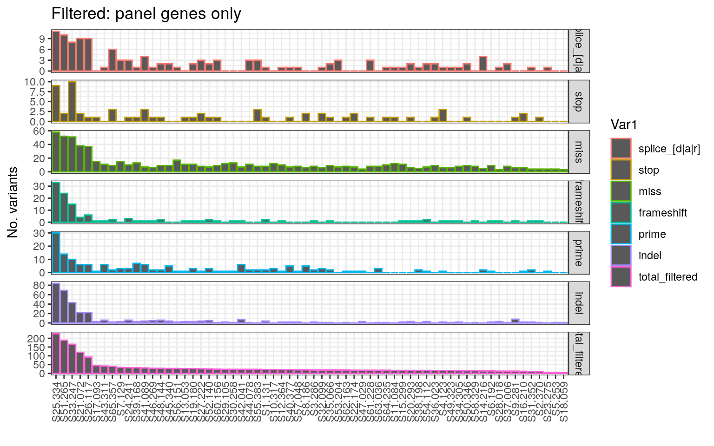

9 Somatic Variant filterin Strategy:
Note the following steps to filter variants:
- Consider only variants which are associated with: splcie junctions, frameshifts, missense, stop, 5’UTR and 3’UTR
- Lies wthin the assigned bed file (off-target reads are omitted)
- filtering out common gnomad or mgrb variants of 0.01 (Previously done in section 04)
- Variants called by two of strelka, mutect2 or vardict (Previously done in section 04)
- VAF which are too high in non-matched normal samples (These would be likely 70% or lower purity, High VAF of 80+ are possibly germline variants) (Previously done in section 04)
Below is a summary of the types of mutations found across the patient samples:
# Define variant types to report
coding_vars <- c("splice_[d|a|r]", "stop", "miss", "frameshift", "prime")
other_vars <- c("5_prime")
# Convert MAF to GRanges for each sample
maf_granges_list <- lapply(FinalSomatic, function(x) {
GRanges(
seqnames = x$CHR,
ranges = IRanges(start = x$POS, end = x$POS + 1),
Gene = x$Hugo_Symbol,
Consequence = x$Consequence,
REF = x$REF,
ALT = x$ALT,
gn_af = x$gn_af,
HGVSp = x$HGVSp_Short,
Samp = x$Tumor_Sample_Barcode,
VAF = x$VAF.TUMOR
)
})
# Filter for variants in target bed regions and of specific consequence types
intersect_bed <- lapply(maf_granges_list, function(gr) findOverlaps(gr, TargetBedGR))
intersect_consequence <- lapply(maf_granges_list, function(gr) {
unlist(sapply(coding_vars, function(pattern) grep(pattern, gr$Consequence)))
})
maf_granges_filtered <- lapply(seq_along(maf_granges_list), function(i) {
indices <- unique(c(queryHits(intersect_bed[[i]]), intersect_consequence[[i]]))
maf_granges_list[[i]][indices]
})
# Overall filtering for FinalSomaticList
all_variants_gr <- GRanges(
seqnames = FinalSomaticList$CHR,
ranges = IRanges(start = FinalSomaticList$POS, end = FinalSomaticList$POS + 1)
)
overlap_target <- findOverlaps(all_variants_gr, TargetBedGR)
final_somatic_list_filt <- FinalSomaticList[queryHits(overlap_target), ]
# Summarize mutation counts
n_total <- sapply(maf_granges_filtered, length)
# Coding mutation counts by type
coding_counts <- sapply(maf_granges_filtered, function(gr) {
sapply(coding_vars, function(pattern) length(grep(pattern, gr$Consequence)))
})
# Indel counts
indel_counts <- sapply(maf_granges_filtered, function(gr) {
sum(nchar(gr$ALT) > 1 | nchar(gr$REF) > 1)
})
# Combine statistics for plotting
summary_stats <- rbind(
coding_counts,
indel = indel_counts,
total_filtered = n_total
)
colnames(summary_stats) <- names(FinalSomatic)
# Prepare data for plotting
summary_melted <- melt(summary_stats)
summary_melted <- summary_melted[order(summary_melted$value, decreasing = TRUE), ]
# Order samples by total variants
sample_order <- unique(as.character(summary_melted$Var2))
summary_melted$Var2 <- factor(summary_melted$Var2, levels = sample_order)
summary_melted$Alive_edited <- SampleIDs$Alive_edited[match(summary_melted$Var2, SampleIDs$SAMPLE_ID)]
ggplot(summary_melted, aes(x = Var2, y = value, col = Var1)) +
geom_bar(stat = "identity") +
facet_grid(Var1 ~ ., scales = "free_y") +
ylab("No. variants") +
xlab("") +
theme_bw() +
theme(axis.text.x = element_text(angle = 90, vjust = 0.5, hjust = 1)) +
ggtitle("Filtered: panel genes only")
Figure 9.1: Summary of mutations following filtering